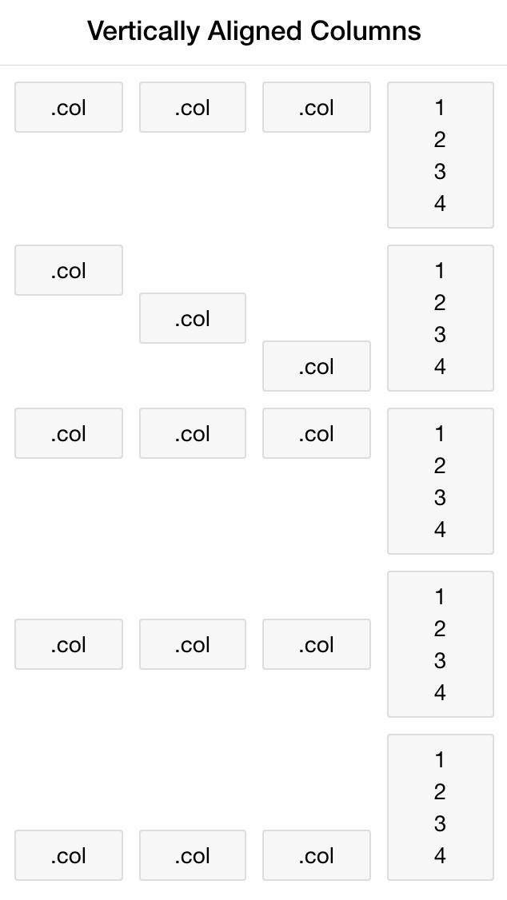
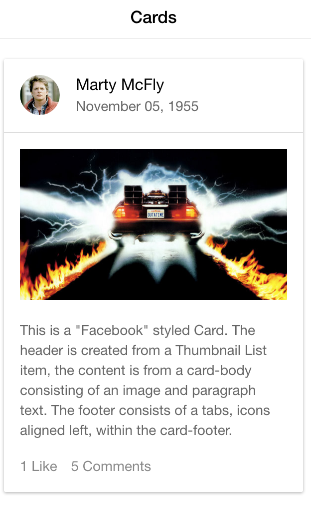
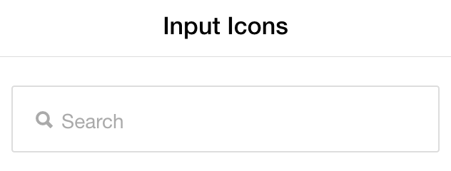
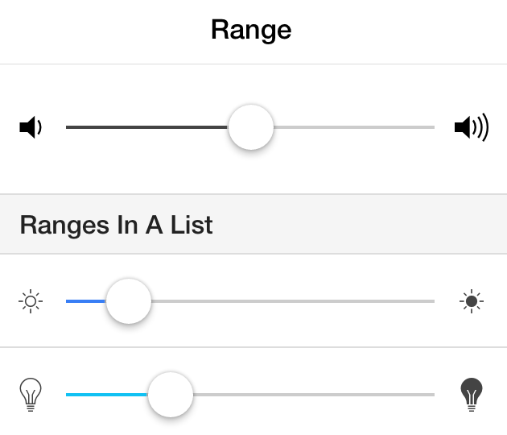

A Presentation by AJ Zane (@azanebrain)
Uses the same codebase to provide the same interface across devices
Like responsive web design but with more pizzazz
Uses actual legislation data to compare your stance on topics against our current representatives to help citizens decide who to vote for.
Uses WordPress for data & Ionic for the front end
A really useful tool to make hybrid apps
HTML / CSS / JS + a little Angular
CLI Tool: Add and configure libraries, track logs, integrate with services, EMail test versions to anyone, Plugs into your build tools (grunt, gulp, npm, etc)...
Cordova / PhoneGap
Polymer
NativeJS
React Native
Titanium
Famo.us
Sencha Touch
...
$scope.events = [
{ title: 'Hands on with Ionic', id: 1 },
{ title: 'Developing for Design', id: 2 },
{ title: 'An intro to POST CSS', id: 3 },
{ title: 'Atomic Design basics and open mic', id: 4 },
{ title: 'Open Mic Night', id: 5 },
{ title: 'Share your project / Lightning talks', id: 6 }
];
But we don't deal in static sites
Ionic is a web tool. You can pull in data from any service
Build our own service
Custom data types, meta, and user handling
Easy for anyone to update content
Plugin data can be accessed through endpoints (wp-api.org/guides/extending.html)
You get a free website if you need it
Install Ionic from the command line:
npm install -g cordova ionic
ionic start {appname} {template}
cd {appname}
ionic platform add ios
ionic platform add android
ionic serve
Get Ionic talking to WordPress
diff --git a/www/index.html b/www/index.html
+
diff --git a/www/js/app.js b/www/js/app.js
// 'starter.controllers' is found in controllers.js
-angular.module('starter', ['ionic', 'starter.controllers', 'ui.router'])
+angular.module('starter', ['ionic', 'starter.controllers', 'ui.router', 'ngResource'])
+
+.factory('resources', function($resource) {
+ var url = 'http://representmenow.co/wp-json';
+ return {
+ 'posts': $resource(url + '/posts'),
+ };
+})
.run(function($ionicPlatform) {
diff --git a/www/js/controllers.js b/www/js/controllers.js
+ // Get the post data
+ resources.posts.query({
+ 'type[]': 'legislation',
+ 'filter[status]': 'publish',
+ 'filter[order]': 'DESC',
+ },
+ function(posts) {
+ // Success callback
+ $scope.legislations = posts;
+ },
+ function(error) {
+ // Error callback
+ console.warn('An error occured:',error);
+ $scope.posts = [{
+ title: 'Error',
+ content: error.data[0].message,
+ }];
+ });
diff --git a/www/templates/legislation.html b/www/templates/legislation.html
- Content will go here
+
+
+
+
+
Modular Design Components
   Familiar CSS classes
This is a basic Card which contains an item that has wrapping text.
A few custom elements
Front End Authority App
Hello, World!
With great power
comes great learning curves
angular.module('starter', ['ionic', 'starter.controllers', 'ngResource'])
.config(function($stateProvider, $urlRouterProvider) {
$stateProvider
.state('app', {
url: '/app',
abstract: true,
templateUrl: 'templates/menu.html',
controller: 'AppCtrl'
})
.state('app.home', {
url: '/home',
views: {
'menuContent': {
templateUrl: 'templates/home.html'
}
}
})
.state('app.events', {
url: '/events',
views: {
'menuContent': {
templateUrl: 'templates/events.html',
controller: 'EventsCtrl'
}
}
})
.state('app.event', {
url: '/events/:eventId',
views: {
'menuContent': {
templateUrl: 'templates/event.html',
controller: 'EventCtrl'
}
}
});
// if none of the above states are matched, use this as the fallback
$urlRouterProvider.otherwise('/app/home');
});
Hybrid app plugin library for AngularJS
barcode scanner, camera, device motion,
device orientation, file,
geolocation, network, social sharing,
status bar, vibration
...
Thanks!
Now lets code
Make an app for Front End Authority
Brainstorm what your app will do and get started
Challenges:
Resources:
Styles are applied to the app in www/css/style.css
Add sass support from the command line with:
ionic setup sass
Data is requested from a server in an HTTP request
Meetup API Console lets you build the request and copy it as a shareable Signed URL: secure.meetup.com/meetup_api/console
Challenges:
Ionic View: Share and test your app - view.ionic.io
Testing - AngularJS is great at it
Caching - Don't waste your user's data
User Authentication